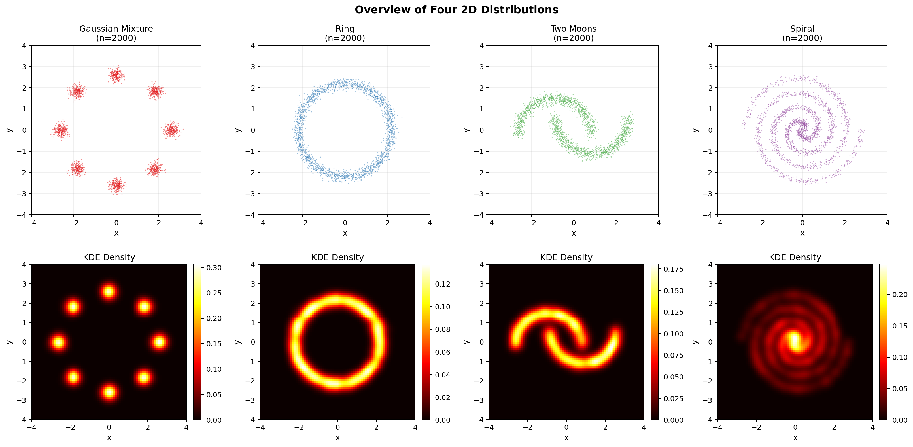

四类二维分布覆盖生成建模的核心难题
问题：给定训练集 $\mathcal{D}^{\text{train}}_c=\{\mathbf{x}_i^{(c)}\}_{i=1}^{2000}\subset\mathbb{R}^2$，学习生成分布 $p_\theta(\mathbf{x})$ 使得生成样本在几何结构、密度和多样性上接近真实数据。
| 分布 | 生成方式 | 建模难点 |
|---|---|---|
| Gaussian Mixture | 8个团簇 ($\sigma=0.16$) | 离散多峰覆盖 |
| Ring | 圆环 ($r=2.2,\ \sigma_r=0.13$) | 中心空洞、薄流形 |
| Two Moons | 对称弧形 ($\sigma=0.08$) | 非凸分支、间隔保持 |
| Spiral | 双螺旋 ($r=0.22t$) | 长程相位一致性 |
每类 2000 训练 + 2000 测试样本；使用 MMD、Wasserstein、Coverage、Precision 四项指标评价。